![[ANA JDG] Asterix and the Great Rescue - Megadrive](../vi/6oUXi0ckLmA/default.jpg)
![[ Présentation pour la chaîne Grenier des Joueurs ] JDG Prod](../art/SHAR.6419.583.2.jpg)


Comparative (Rationnelle):
Forme de publicité qui vise à convaincre la cible à l'aide d'arguments rationnels.
Cette forme de création considère l'individu comme un être raisonnable qui aspire à maximiser sa satisfaction à l'aide de choix réfléchis.
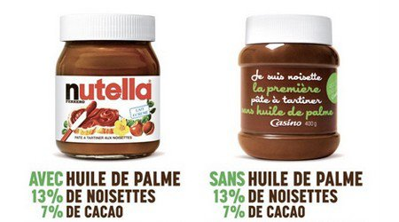
Mécaniste (Publicité basé sur le mécanisme):
Forme de publicité qui vise à provoquer chez l'individu des réactions automatiques indépendantes de son conscient.
Cette forme de création considère l'individu comme un être irrationnel,réceptif au conditionnement,capable de seuls automatismes.
L'efficacité de ce type de technique passe par l'omniprésence et la répétition du message.
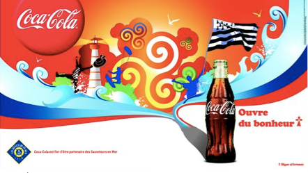
Intégrative ou projective:
Forme de publicité qui confère au produit et au consommateur les valeurs et les normes d'un groupe de référence valorisant.
Cette forme de création est d'autant plus efficace que le produit est impliquant ou personnel.
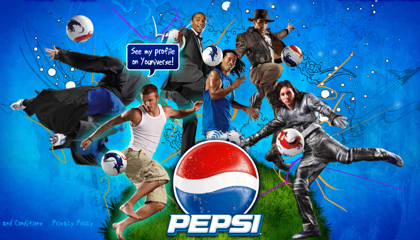
Suggestive (qui suggère):
Forme de publicité dont l'efficacité repose sur au moins une évocation propre à stimuler le sens de l'individu.
Cette forme de création conduit l'individu à éprouver des sensations diverses: La liberté,la jeunesse,la beauté,la fraîcheur,...
------------------------------------------------------------------------------------------------------------------------------------------------------
Source: Les principales formes de publicité,promarket consulté le 16 décembre 2014.
URL: http://www.promarket.fr/Files/dossier_principales_formes_de_publicite.swf
KidpaddleetcieGlin
Description :
Le Blog d'une personne aillant découvert internet en 2007 qui partage une partie de sa vie mais surtout ses réflexions, ses découvertes et ses cours!
Bon, je ne vous garantit pas que 100% du contenu est fiable mais aux moins je l'approuve! :)
N'oubliez pas de me retrouver sur les autres sites internet du réseaux KidpaddleetcieGlin retrouvable dans le premier article de chaque page. ^-^
Bon, je ne vous garantit pas que 100% du contenu est fiable mais aux moins je l'approuve! :)
N'oubliez pas de me retrouver sur les autres sites internet du réseaux KidpaddleetcieGlin retrouvable dans le premier article de chaque page. ^-^
Je bosse actuellement pour la chaîne Grenier des Joueurs
Son morceau préféré
Retour au blog de KidpaddleetcieGlin
1. Introduction
Dire pourquoi on a pris le sujet du TFE!
2. Fait social
>Prouver (recherche->Documents) -> Diversité
>Délimiter
>Axe
3. Question de départ
La question de départ permet :
> d'avoir un point de départ
> de cerner le thème et de restreindre le questionnement
> d'expliciter le plus clairement possible l'objet de l'enquête
> de guider le chercheur au fil du processus de recherche
(copier-coller provenant de http://www.unifr.ch/socsem/cours/compte_rendu/processus%20enqu%EAte.pdf )
Une question de départ doit être claire,pertinente et réaliste!
4. Hypothèses
Une hypothèse doit reprendre des termes du fait social et de la question de départ.
5. Les concepts
Expliquer/définir les termes se trouvant dans la question de départ et les hypothèses.
6. Théories
C'est l'étape où on prouve les hypothèses à partir de reportages/expériences/...
(n'oublier pas de varier vos sources et donc de vous fier à plusieurs sites/journaux/livres!)
7. Conclusion
Résumer sans revenir sur des détailles vos observations certifiés par la recherche et annoncer la fin du TFE!
Introduction
Je vais vous parler de l'état islamique en étudiant sur plusieurs axes que voici :
-Les moyens de recrutement,
-Les moyens de financement,
-Le but (causes),
-L'identité des jeunes européens.
En ce qui est de mes sources, je vais devoir employez exclusivement le réseau mondial faute de livre disponible évoquant comme thème l'état islamique dans mon logis.
But (causes)
Le but des Djihadistes est d'obtenir un état où leur chef a une autorité politique et religieuse.
Cette idée vient certainement de la mort de Mohammed qui sépara les musulmans en deux groupes (les Chiites et les Sunnites) qui ont une vision de leur chef chacun.
Les Sunnites sont à la base de cette idée et utilise le petit Jihad (Jihad de conquête) pour créer leur état tout en luttant contre les athées, les chiites et les protestants.
(La source est bien évidemment de mon cours en Sciences Sociales).
Moyens de recrutement
Les Djihadistes contactent leurs « victimes » à travers les médias.
Les réseaux sociaux sont utilisés pour connaître les centres d'intérêt des futures recrues[1].Les Djihadistes jouent surtout avec le malaise identitaire en se mettant les adolescents immigrés dans leurs poches avec leurs idéologies radicales1 .
On peut également se faire endoctriner avec certain article se trouvant sur des sites Djihadistes car ils déforment le point de vue des médias externes et offre une vision plus à leurs avantages.
Exemple : Ils ne meurent pas en tant que terroriste, ils meurent en tant que martyre !
Facebook, Twitter, YouTube,... tous ces sites demeurent les meilleurs outils de propagande servant à diffuser du contenu pour arranger la réalité à leurs sauces. Et ce malgré les efforts de la part de Facebook, Twitter et Google[2].
------------------------------------------------------------------------------------------------------------------------------------------------------
Sources:
[1] Bernard, P. (2014, décembre 11). Comment le djihad recrute de jeunes Européens. Récupéré sur lemonde.fr: http://www.lemonde.fr/europe/article/2014/12/11/comment-le-djihad-recrute-de-jeunes-europeens_4538753_3214.html
[2] lefigaro.fr. (2015, mai 28). Facebook, Google et Twitter se liguent contre le djihadisme en France. Récupéré sur lefigaro.fr: http://www.lefigaro.fr/secteur/high-tech/2015/05/27/32001-20150527ARTFIG00290-facebook-google-et-twitter-se-liguent-contre-le-djihadisme-en-france.php
-----------------------------------------------------------------------------------------------------------------------------------------------------
Bien sur, des publics sont visés d'après un ouvrage nommé « A Course in the Art of Recruiting » :
« les musulmans non religieux (« un vivier sans limite », est-il écrit dans l'ouvrage) ;les jeunes qui habitent loin des villes (« ils ont des dispositions naturelles pour la religion et il est facile et de les convaincre et de les manipuler ») ;les étudiants partis à l'université (« l'université est un lieu d'isolement pour quatre, cinq ou six ans ») ; »[1]
En poussant mes recherches vers des témoignages, j'en ai trouvé un qui met en valeurs le recrutement.
Un jeune musulman français de Paris est partit en Syrie après avoir tout abandonné excepté sa femme et ses deux enfants. D'après lui, c'est les prêches de Ben Laden, visionnés et écoutés sur internet,
et le ras-le-bol de ne pouvoir agir plus pour la communauté musulmane.[2]
Le pire c'est que ce ne sont pas que des habitants de Syrie qui recrutent. J'ai trouvé un article (document) qui nous explique qu'en se faisant pour une jeune fille de 15 ans musulmane pour contacter une autre fille de 16 ans également parisienne qui s'auto-proclame Djihadiste, les journalistes ont réussis à lui soutirer des informations et également à comprendre le système des réseaux sociaux. Cet article s'étend sur le recrutement VIA Facebook et Skype.[3]
-----------------------------------------------------------------------------------------------------------------------------------------------------
Sources
[1] Blevennec, N. L. (2015, Juillet 6). Pour recruter, l'Etat islamique s'inspire-t-il du manuel d'Al Qaeda ? Récupéré sur rue89.nouvelobs.com: http://rue89.nouvelobs.com/2015/07/06/recruter-letat-islamique-sinspire-t-manuel-dal-qaeda-260129
[2] BOITIAUX, C. (2014, novembre 19). "Pourquoi je veux mourir en Syrie" : confession d'un jihadiste français. Récupéré sur france24.com: http://www.france24.com/fr/20140212-pourquoi-je-veux-mourir-syrie-confession-djihadiste-francais-temoignage-martyr
[3] Legrand, S. (2014, novembre 14). DOCUMENT. Jihad : "Si tu veux vraiment partir en Syrie, sois prête à tout", conseille une adolescente. Récupéré sur francetvinfo.fr: http://www.francetvinfo.fr/france/jihadistes-francais/info-francetv-info-jihad-comment-une-jeune-fille-de-16-ans-aide-ses-amies-facebook-a-partir-en-syrie_742665.html
-----------------------------------------------------------------------------------------------------------------------------------------------------
Financement
Les sources de revenus de l'état islamique proviennent du pillage des territoires conquis (dont l'Irak), des rançons pour les otages, du racket et de la saisie de puits de pétrole. Mais ce n'est pas tout car il bénéficie également de dons venant des pays du Golfe, notamment au Koweït. [1]
-----------------------------------------------------------------------------------------------------------------------------------------------------
Sources:
[1] Henderson/boi, M. (2014, octobre 8. Qu'est-ce que l'organisation Etat islamique (EI)? Récupéré sur rts.ch: http://www.rts.ch/info/monde/5920219-la-montee-en-puissance-du-groupe-jihadiste-eiil-au-proche-orient.html
-----------------------------------------------------------------------------------------------------------------------------------------------------
Voici une carte où se trouvent tout les puits de pétrole des Djihadistes.
(J'en compte 11 sur le territoire conquit en marron).
(Carte se trouvant sur http://www.voltairenet.org/article184370.html )
Jeunes Européens
D'après ce tableau :
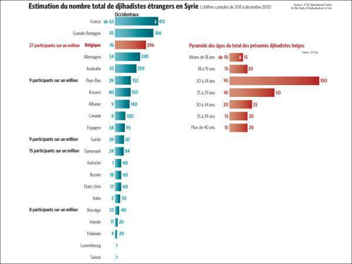
(Tableau provenant de http://www.lesoir.be/560552/article/actualite/monde/2014-06-02/ces-europeens-qui-partent-faire-djihad-en-syrie-archive exprimant l'estimation du nombre total de Djihadistes étrangers en Syrie entre 2011 et fin 2013).
On peut extraire l'information comme quoi c'est majoritairement les jeunes entre 20 et 24 ans qui sont touchés par le Djihadisme.
La majorité est également belge, anglaise et française.
D'après une source déjà utilisé (de toute façon, j'en ai assez), les djihadistes ont effectivement focalisés leur recrutement sur les musulmans et les jeunes à la recherche d'une identité (en malaise identitaire).[1]
En ce qui concerne la situation familiale, mon témoignage [2]et mon article[3] ne concordent pas car d'un coté j'ai un père musulman de deux enfants qui gagnaient 3000¤ par mois et de l'autre coté nous avons une jeune fille de 16 ans qui se plaignait juste que ses parents musulmans soient peu pratiquants.
D'après le témoignage[2] et l'article[3], c'est avec conscience qu'ils ne reviendront jamais que les jeunes partent et qu'ils rejettent tout de leurs anciennes vies (exceptés la famille qui est du même avis que le jeune, sinon elle reste au pays d'origine).
Pour trouver le sexe le plus représenté dans les départs en Syrie, je me fie à mon intuition qui me dit que c'est le sexe masculin car les Djihadistes sont tous des hommes (la femme et les enfants sont mis sur le cotés où ils sont nourris, logés,... pendant que le père, ou mari, est en train de faire la guerre).
-----------------------------------------------------------------------------------------------------------------------------------------------------
Sources:
[1] Blevennec, N. L. (2015, Juillet 6). Pour recruter, l'Etat islamique s'inspire-t-il du manuel d'Al Qaeda ? Récupéré sur rue89.nouvelobs.com: http://rue89.nouvelobs.com/2015/07/06/recruter-letat-islamique-sinspire-t-manuel-dal-qaeda-260129
[2] BOITIAUX, C. (2014, novembre 19). "Pourquoi je veux mourir en Syrie" : confession d'un jihadiste français. Récupéré sur france24.com: http://www.france24.com/fr/20140212-pourquoi-je-veux-mourir-syrie-confession-djihadiste-francais-temoignage-martyr
[3] Legrand, S. (2014, novembre 14). DOCUMENT. Jihad : "Si tu veux vraiment partir en Syrie, sois prête à tout", conseille une adolescente. Récupéré sur francetvinfo.fr: http://www.francetvinfo.fr/france/jihadistes-francais/info-francetv-info-jihad-comment-une-jeune-fille-de-16-ans-aide-ses-amies-facebook-a-partir-en-syrie_742665.html
-----------------------------------------------------------------------------------------------------------------------------------------------------
Conclusion
L'État Islamique est assuré en terme de recrutement en se focalisant sur les jeunes et les musulmans mais également financièrement car leurs sources de finances sont nombreuses et ne dépendent pas majoritairement de état extérieur.
Le recrutement est perpétuelle car les jeunes musulmans se « contaminent » entre eux VIA les réseaux sociaux ce qui permet de toucher en masse des personnes qui répondent par la religion musulmane ou l'âge.
Le malaise identitaire est la source du problème car une bonne part des musulmans se sentent mal dans notre société parce que la vision de leur religion ne peut être pratiquée selon leurs convictions
(exemple : port du voile à l'école) mais aussi ne pas être victime de jugement dans la société
(exemple : racisme).
Bibliographie
Bernard, P. (2014, décembre 11). Comment le djihad recrute de jeunes Européens. Récupéré sur lemonde.fr: http://www.lemonde.fr/europe/article/2014/12/11/comment-le-djihad-recrute-de-jeunes-europeens_4538753_3214.html
Blevennec, N. L. (2015, Juillet 6). Pour recruter, l'Etat islamique s'inspire-t-il du manuel d'Al Qaeda ? Récupéré sur rue89.nouvelobs.com: http://rue89.nouvelobs.com/2015/07/06/recruter-letat-islamique-sinspire-t-manuel-dal-qaeda-260129
BOITIAUX, C. (2014, novembre 19). "Pourquoi je veux mourir en Syrie" : confession d'un jihadiste français. Récupéré sur france24.com: http://www.france24.com/fr/20140212-pourquoi-je-veux-mourir-syrie-confession-djihadiste-francais-temoignage-martyr
Henderson/boi, M. (2014, octobre8). Qu'est-ce que l'organisation Etat islamique (EI)? Récupéré sur rts.ch: http://www.rts.ch/info/monde/5920219-la-montee-en-puissance-du-groupe-jihadiste-eiil-au-proche-orient.html
Lallemand, A. (2014, juin 2). Ces Européens qui partent faire le djihad en Syrie : archive. Récupéré sur lesoir.be: http://www.lesoir.be/560552/article/actualite/monde/2014-06-02/ces-europeens-qui-partent-faire-djihad-en-syrie-archive
Le Monde.fr. (2014, septembre 26). Origine, nombre, financement... l'Etat islamique en cinq questions. Récupéré sur Le Monde.fr: http://www.lemonde.fr/proche-orient/article/2014/09/15/origine-nombre-financement-l-etat-islamique-en-cinq-questions_4487306_3218.html
lefigaro.fr. (2015, mai 28). Facebook, Google et Twitter se liguent contre le djihadisme en France. Récupéré sur lefigaro.fr: http://www.lefigaro.fr/secteur/high-tech/2015/05/27/32001-20150527ARTFIG00290-facebook-google-et-twitter-se-liguent-contre-le-djihadisme-en-france.php
Legrand, S. (2014, novembre 14). DOCUMENT. Jihad : "Si tu veux vraiment partir en Syrie, sois prête à tout", conseille une adolescente. Récupéré sur francetvinfo.fr: http://www.francetvinfo.fr/france/jihadistes-francais/info-francetv-info-jihad-comment-une-jeune-fille-de-16-ans-aide-ses-amies-facebook-a-partir-en-syrie_742665.html
Meyssan, T. (2014, juin 23). Jihadisme et industrie pétrolière. Récupéré sur voltairenet.org: http://www.voltairenet.org/article184370.html
Je vais vous parler de l'état islamique en étudiant sur plusieurs axes que voici :
-Les moyens de recrutement,
-Les moyens de financement,
-Le but (causes),
-L'identité des jeunes européens.
En ce qui est de mes sources, je vais devoir employez exclusivement le réseau mondial faute de livre disponible évoquant comme thème l'état islamique dans mon logis.
But (causes)
Le but des Djihadistes est d'obtenir un état où leur chef a une autorité politique et religieuse.
Cette idée vient certainement de la mort de Mohammed qui sépara les musulmans en deux groupes (les Chiites et les Sunnites) qui ont une vision de leur chef chacun.
Les Sunnites sont à la base de cette idée et utilise le petit Jihad (Jihad de conquête) pour créer leur état tout en luttant contre les athées, les chiites et les protestants.
(La source est bien évidemment de mon cours en Sciences Sociales).
Moyens de recrutement
Les Djihadistes contactent leurs « victimes » à travers les médias.
Les réseaux sociaux sont utilisés pour connaître les centres d'intérêt des futures recrues[1].Les Djihadistes jouent surtout avec le malaise identitaire en se mettant les adolescents immigrés dans leurs poches avec leurs idéologies radicales1 .
On peut également se faire endoctriner avec certain article se trouvant sur des sites Djihadistes car ils déforment le point de vue des médias externes et offre une vision plus à leurs avantages.
Exemple : Ils ne meurent pas en tant que terroriste, ils meurent en tant que martyre !
Facebook, Twitter, YouTube,... tous ces sites demeurent les meilleurs outils de propagande servant à diffuser du contenu pour arranger la réalité à leurs sauces. Et ce malgré les efforts de la part de Facebook, Twitter et Google[2].
------------------------------------------------------------------------------------------------------------------------------------------------------
Sources:
[1] Bernard, P. (2014, décembre 11). Comment le djihad recrute de jeunes Européens. Récupéré sur lemonde.fr: http://www.lemonde.fr/europe/article/2014/12/11/comment-le-djihad-recrute-de-jeunes-europeens_4538753_3214.html
[2] lefigaro.fr. (2015, mai 28). Facebook, Google et Twitter se liguent contre le djihadisme en France. Récupéré sur lefigaro.fr: http://www.lefigaro.fr/secteur/high-tech/2015/05/27/32001-20150527ARTFIG00290-facebook-google-et-twitter-se-liguent-contre-le-djihadisme-en-france.php
-----------------------------------------------------------------------------------------------------------------------------------------------------
Bien sur, des publics sont visés d'après un ouvrage nommé « A Course in the Art of Recruiting » :
« les musulmans non religieux (« un vivier sans limite », est-il écrit dans l'ouvrage) ;les jeunes qui habitent loin des villes (« ils ont des dispositions naturelles pour la religion et il est facile et de les convaincre et de les manipuler ») ;les étudiants partis à l'université (« l'université est un lieu d'isolement pour quatre, cinq ou six ans ») ; »[1]
En poussant mes recherches vers des témoignages, j'en ai trouvé un qui met en valeurs le recrutement.
Un jeune musulman français de Paris est partit en Syrie après avoir tout abandonné excepté sa femme et ses deux enfants. D'après lui, c'est les prêches de Ben Laden, visionnés et écoutés sur internet,
et le ras-le-bol de ne pouvoir agir plus pour la communauté musulmane.[2]
Le pire c'est que ce ne sont pas que des habitants de Syrie qui recrutent. J'ai trouvé un article (document) qui nous explique qu'en se faisant pour une jeune fille de 15 ans musulmane pour contacter une autre fille de 16 ans également parisienne qui s'auto-proclame Djihadiste, les journalistes ont réussis à lui soutirer des informations et également à comprendre le système des réseaux sociaux. Cet article s'étend sur le recrutement VIA Facebook et Skype.[3]
-----------------------------------------------------------------------------------------------------------------------------------------------------
Sources
[1] Blevennec, N. L. (2015, Juillet 6). Pour recruter, l'Etat islamique s'inspire-t-il du manuel d'Al Qaeda ? Récupéré sur rue89.nouvelobs.com: http://rue89.nouvelobs.com/2015/07/06/recruter-letat-islamique-sinspire-t-manuel-dal-qaeda-260129
[2] BOITIAUX, C. (2014, novembre 19). "Pourquoi je veux mourir en Syrie" : confession d'un jihadiste français. Récupéré sur france24.com: http://www.france24.com/fr/20140212-pourquoi-je-veux-mourir-syrie-confession-djihadiste-francais-temoignage-martyr
[3] Legrand, S. (2014, novembre 14). DOCUMENT. Jihad : "Si tu veux vraiment partir en Syrie, sois prête à tout", conseille une adolescente. Récupéré sur francetvinfo.fr: http://www.francetvinfo.fr/france/jihadistes-francais/info-francetv-info-jihad-comment-une-jeune-fille-de-16-ans-aide-ses-amies-facebook-a-partir-en-syrie_742665.html
-----------------------------------------------------------------------------------------------------------------------------------------------------
Financement
Les sources de revenus de l'état islamique proviennent du pillage des territoires conquis (dont l'Irak), des rançons pour les otages, du racket et de la saisie de puits de pétrole. Mais ce n'est pas tout car il bénéficie également de dons venant des pays du Golfe, notamment au Koweït. [1]
-----------------------------------------------------------------------------------------------------------------------------------------------------
Sources:
[1] Henderson/boi, M. (2014, octobre 8. Qu'est-ce que l'organisation Etat islamique (EI)? Récupéré sur rts.ch: http://www.rts.ch/info/monde/5920219-la-montee-en-puissance-du-groupe-jihadiste-eiil-au-proche-orient.html
-----------------------------------------------------------------------------------------------------------------------------------------------------
Voici une carte où se trouvent tout les puits de pétrole des Djihadistes.
(J'en compte 11 sur le territoire conquit en marron).
(Carte se trouvant sur http://www.voltairenet.org/article184370.html )
Jeunes Européens
D'après ce tableau :
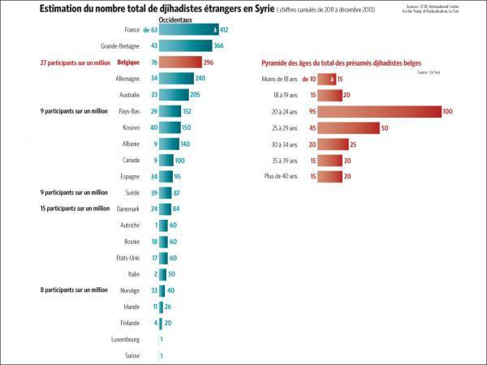
(Tableau provenant de http://www.lesoir.be/560552/article/actualite/monde/2014-06-02/ces-europeens-qui-partent-faire-djihad-en-syrie-archive exprimant l'estimation du nombre total de Djihadistes étrangers en Syrie entre 2011 et fin 2013).
On peut extraire l'information comme quoi c'est majoritairement les jeunes entre 20 et 24 ans qui sont touchés par le Djihadisme.
La majorité est également belge, anglaise et française.
D'après une source déjà utilisé (de toute façon, j'en ai assez), les djihadistes ont effectivement focalisés leur recrutement sur les musulmans et les jeunes à la recherche d'une identité (en malaise identitaire).[1]
En ce qui concerne la situation familiale, mon témoignage [2]et mon article[3] ne concordent pas car d'un coté j'ai un père musulman de deux enfants qui gagnaient 3000¤ par mois et de l'autre coté nous avons une jeune fille de 16 ans qui se plaignait juste que ses parents musulmans soient peu pratiquants.
D'après le témoignage[2] et l'article[3], c'est avec conscience qu'ils ne reviendront jamais que les jeunes partent et qu'ils rejettent tout de leurs anciennes vies (exceptés la famille qui est du même avis que le jeune, sinon elle reste au pays d'origine).
Pour trouver le sexe le plus représenté dans les départs en Syrie, je me fie à mon intuition qui me dit que c'est le sexe masculin car les Djihadistes sont tous des hommes (la femme et les enfants sont mis sur le cotés où ils sont nourris, logés,... pendant que le père, ou mari, est en train de faire la guerre).
-----------------------------------------------------------------------------------------------------------------------------------------------------
Sources:
[1] Blevennec, N. L. (2015, Juillet 6). Pour recruter, l'Etat islamique s'inspire-t-il du manuel d'Al Qaeda ? Récupéré sur rue89.nouvelobs.com: http://rue89.nouvelobs.com/2015/07/06/recruter-letat-islamique-sinspire-t-manuel-dal-qaeda-260129
[2] BOITIAUX, C. (2014, novembre 19). "Pourquoi je veux mourir en Syrie" : confession d'un jihadiste français. Récupéré sur france24.com: http://www.france24.com/fr/20140212-pourquoi-je-veux-mourir-syrie-confession-djihadiste-francais-temoignage-martyr
[3] Legrand, S. (2014, novembre 14). DOCUMENT. Jihad : "Si tu veux vraiment partir en Syrie, sois prête à tout", conseille une adolescente. Récupéré sur francetvinfo.fr: http://www.francetvinfo.fr/france/jihadistes-francais/info-francetv-info-jihad-comment-une-jeune-fille-de-16-ans-aide-ses-amies-facebook-a-partir-en-syrie_742665.html
-----------------------------------------------------------------------------------------------------------------------------------------------------
Conclusion
L'État Islamique est assuré en terme de recrutement en se focalisant sur les jeunes et les musulmans mais également financièrement car leurs sources de finances sont nombreuses et ne dépendent pas majoritairement de état extérieur.
Le recrutement est perpétuelle car les jeunes musulmans se « contaminent » entre eux VIA les réseaux sociaux ce qui permet de toucher en masse des personnes qui répondent par la religion musulmane ou l'âge.
Le malaise identitaire est la source du problème car une bonne part des musulmans se sentent mal dans notre société parce que la vision de leur religion ne peut être pratiquée selon leurs convictions
(exemple : port du voile à l'école) mais aussi ne pas être victime de jugement dans la société
(exemple : racisme).
Bibliographie
Bernard, P. (2014, décembre 11). Comment le djihad recrute de jeunes Européens. Récupéré sur lemonde.fr: http://www.lemonde.fr/europe/article/2014/12/11/comment-le-djihad-recrute-de-jeunes-europeens_4538753_3214.html
Blevennec, N. L. (2015, Juillet 6). Pour recruter, l'Etat islamique s'inspire-t-il du manuel d'Al Qaeda ? Récupéré sur rue89.nouvelobs.com: http://rue89.nouvelobs.com/2015/07/06/recruter-letat-islamique-sinspire-t-manuel-dal-qaeda-260129
BOITIAUX, C. (2014, novembre 19). "Pourquoi je veux mourir en Syrie" : confession d'un jihadiste français. Récupéré sur france24.com: http://www.france24.com/fr/20140212-pourquoi-je-veux-mourir-syrie-confession-djihadiste-francais-temoignage-martyr
Henderson/boi, M. (2014, octobre8). Qu'est-ce que l'organisation Etat islamique (EI)? Récupéré sur rts.ch: http://www.rts.ch/info/monde/5920219-la-montee-en-puissance-du-groupe-jihadiste-eiil-au-proche-orient.html
Lallemand, A. (2014, juin 2). Ces Européens qui partent faire le djihad en Syrie : archive. Récupéré sur lesoir.be: http://www.lesoir.be/560552/article/actualite/monde/2014-06-02/ces-europeens-qui-partent-faire-djihad-en-syrie-archive
Le Monde.fr. (2014, septembre 26). Origine, nombre, financement... l'Etat islamique en cinq questions. Récupéré sur Le Monde.fr: http://www.lemonde.fr/proche-orient/article/2014/09/15/origine-nombre-financement-l-etat-islamique-en-cinq-questions_4487306_3218.html
lefigaro.fr. (2015, mai 28). Facebook, Google et Twitter se liguent contre le djihadisme en France. Récupéré sur lefigaro.fr: http://www.lefigaro.fr/secteur/high-tech/2015/05/27/32001-20150527ARTFIG00290-facebook-google-et-twitter-se-liguent-contre-le-djihadisme-en-france.php
Legrand, S. (2014, novembre 14). DOCUMENT. Jihad : "Si tu veux vraiment partir en Syrie, sois prête à tout", conseille une adolescente. Récupéré sur francetvinfo.fr: http://www.francetvinfo.fr/france/jihadistes-francais/info-francetv-info-jihad-comment-une-jeune-fille-de-16-ans-aide-ses-amies-facebook-a-partir-en-syrie_742665.html
Meyssan, T. (2014, juin 23). Jihadisme et industrie pétrolière. Récupéré sur voltairenet.org: http://www.voltairenet.org/article184370.html
J'avais créé une fleur à cinq pétales pour juger une appréciation...mais on m'a fait comprendre qu'on peut avoir un doute à juger l'avis "à la folie" et "passionnément".
J'ai donc mis à jour la fleur d'enquête pour en faire une version beaucoup plus pertinente et qui ne va pas froissez davantage!
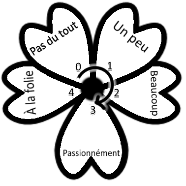
L'image est plus grande que l'original et j'ai employez une technique de 3D sur de la 2D pour créer un effet de netteté,comme ça vous pourrez re-dimensionnez à votre guise sans perdre la présente netteté et donc l'utilité de la fleur d'enquête!
J'ai donc mis à jour la fleur d'enquête pour en faire une version beaucoup plus pertinente et qui ne va pas froissez davantage!
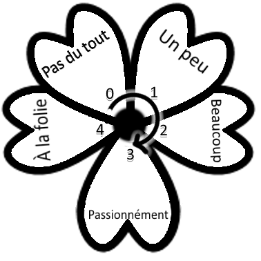
L'image est plus grande que l'original et j'ai employez une technique de 3D sur de la 2D pour créer un effet de netteté,comme ça vous pourrez re-dimensionnez à votre guise sans perdre la présente netteté et donc l'utilité de la fleur d'enquête!
C'est pour une enquête sur les médias!
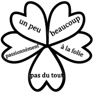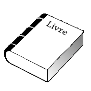
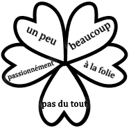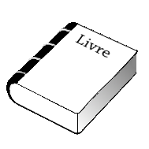
1. La légitimité formelle
A)Origine ImpliciteCertaines règles (normes) n'ont jamais été vraiment décidées, ni discutées. Elles peuvent être considérées comme juste parce qu'elles s'imposent plutôt d'elles-mêmes, elles apparaissent normales, évidentes aux yeux des membres d'un groupe.
B)Autorité Supérieure
Certaines règles ou lois peuvent être considéré comme juste parce que l'autorité qui les a décidées apparait comme supérieure, supérieur normalement ou intellectuellement.
Cela suppose une croyance en une inégalité, inégalité entre celui qui fait la loi et ceux qui doivent l'appliquer.
(La supériorité doit être incontestable)
C) L'Assemblée délibérative directe
Cette règle ou lois est considéré comme juste parce qu'elle a été prise par ceux-là même à qui elle s'applique. On parle alors de démocratie directe parce que tous les intéressés ont eût l'occasion de participé aux débuts et prendre positions.
D) L'Assemblée délibérative représentative
Certaine règle ou lois peuvent être considérées comme juste parce qu'elles ont été prise par des représentants élus par ceux-là même à qui elle s'applique. On parle alors de démocratie indirecte parce que tous les intéressés n'ont pas eût l'occasion de participer au débat et de prendre position, mais parce que ces intéressés ont eût au paravent l'occasion de choisir et d'élire leurs représentants.
E) L'autorité reconnue et limitée
Certaine règle ou lois peuvent être considéré comme juste parce qu'elles sont prises par une autorité communément admise dans un cadre légal, précis et restreinte pourvus que cette autorité justifie ou puisse justifier sa décision en référence à l'ensemble des lois existantes.
Légitimé formelle + légitimé substantielle = Loi juste
2. La légitimité substantielle (valeurs)
A) Valeurs supra-personnellesLes valeurs modernes, liées à la démocratie, et constitutives des droit de l'homme sont toutes humanistes c'est-à-dire qu'elles considèrent comme fins en sois l'Homme lui-même égale en dignité à toutes autres personnes. Seront considérés ici comme valeurs non humanistes, comme valeurs supra-personnelles toutes valeurs qui remettent en cause ce principe d'égale dignité et qui justifie au nom de principe supérieur à la personne humaine des actes contre les personnes, contre leurs dignités.
B) Les valeurs liées au principe d'égalité
L'un des deux premiers de la démocratie et des droits de l'homme concernent l'égalité entre tous les hommes : l'égalité de naissance, en dignité et en droit.
C) Les valeurs liées au principe de liberté
L'un des premiers principes des droits de l'homme concerne la liberté fondamentale de chaque individus, liberté d'expression, de religion, de réunion pacifique.
D) Le principe d'efficacité
En parallèle aux principes d'égalité et de liberté, un autre principe doit également réagir le droit, servir de principe doit également régir le droit, servir de principe aux lois : c'est le principe d'efficacité. En effet, à quoi servirait les droits fondamentaux, égalité et liberté, dans une société où l'on mourait de faim par manque de moyens. Par exemple, le règlement de travail dans une entreprise ou dans une école contient principalement des règles assurant l'efficacité de l'organisation : horaire de travail ou de productivité.

Partage